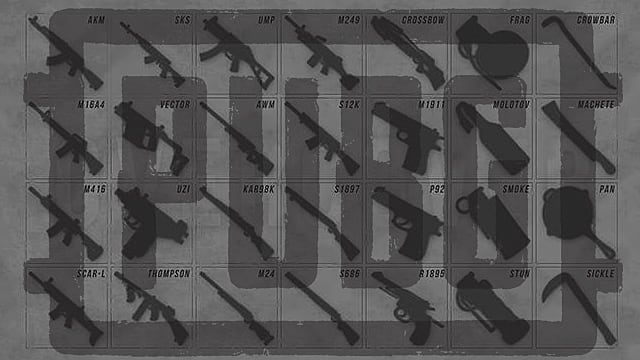

Home
Welcome!! If you are looking for information abour pubg mobile armory then you havve come to the right place. This website will give you the complete information about Pubg mobile's armory. It contains all the wepons that are present in the game. Now if you are an avid PUBG Mobile player, then I am pretty sure you have a particular gun combo that you usually prefer.
There are various kind wepons in this game which are divided as Assault Rifels , SMG's , Shotguns , snipers , bolt-action snipers , Melee wepons , pistiols , and a Flare gun
However, there are heaps of PUBG weapons to choose from, and as you can only carry two primary weapons, a pistol, a Melee weapon, and a grenade, picking what to keep and what to discard is half the battle. There’s also a lot more to consider when reviewing PUBG’s weapons than how long they take to drop an enemy or how accurate they are. Some rifles might lack some punch, but they more than make up for it in other, less obvious areas like bullet speed, which will mean less bullet drop and travel time. Likewise, some guns might not seem all that good at first, but become the best in their class with the right attachments. In an effort to make those decisions easier for you, we have assembled this PUBG weapons guide packed with details